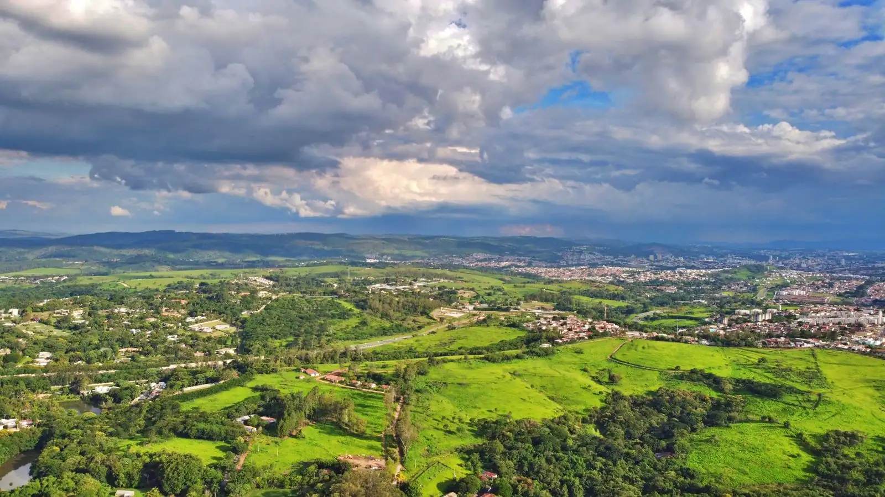

Sobre nós
Gente do campo, cuidando de patrimônio rural
A Terra Nobre nasceu em Ribeirão Preto para negociar propriedades rurais com o cuidado que elas pedem: técnica, documentação em ordem e discrição.
Nossa história (exemplo)
Desde 2009 no nordeste paulista
Começamos atendendo cafeicultores da Alta Mogiana que queriam vender sem expor a fazenda. Com o tempo, a carteira cresceu para cana, grãos, pecuária, haras e sítios, sempre nas regiões de Franca, Ribeirão Preto e Orlândia.
Nosso trabalho não é só anunciar. É conferir documentos, organizar a ficha técnica, filtrar compradores e acompanhar a negociação até a escritura. Por isso trabalhamos com poucas propriedades por consultor.
Equipe
Quem vai atender você
Nomes e registros de exemplo.
Henrique Arantes
Café e Alta Mogiana · CRECI 000001-F (exemplo)Filho de cafeicultor da Alta Mogiana, acompanha safras, terreiros e pós-colheita há 19 anos. Conduz as visitas técnicas das fazendas de café.
Marina Junqueira
Cana, grãos e arrendamentos · CRECI 000002-F (exemplo)Engenheira agrônoma, cuida das áreas de cana e grãos da região de Ribeirão Preto e Orlândia, incluindo contratos de arrendamento e parceria com usinas.
Otávio Lemos
Pecuária, haras e sítios · CRECI 000003-F (exemplo)Zootecnista, avalia pastagens, divisões, aguadas e estrutura de manejo. Atende fazendas de cria e recria, haras e sítios de lazer.
Compromissos
Como trabalhamos
Sigilo por padrão
Nenhuma propriedade é anunciada com município, coordenada ou nome da fazenda.
Documentos antes do anúncio
Conferimos matrícula, CAR, CCIR, ITR e contratos antes de divulgar.
Pontos de atenção à vista
Cada ficha mostra o que precisa ser resolvido. Comprador informado negocia melhor.
Visitas acompanhadas
Sempre agendadas com o proprietário e acompanhadas por um consultor.
Áreas nas duas medidas
Hectare e alqueire paulista, lado a lado, em todo o site e nas fichas.
Um consultor por negócio
Você fala sempre com a mesma pessoa, do início ao fim.
Créditos
Fotos usadas neste site
Todas as fotos são reais, do banco Pexels (licença Pexels, uso livre). As propriedades, a empresa e os números são de exemplo: as fotos ilustram o tipo de área, não a propriedade anunciada.
- drone-scrub.mp4 e drone-cel.mp4: vídeo de drone de Matheus Bertelli (sobrevoo da página inicial)
- art-agua.webp: foto de jonathan emili
- art-alqueire.webp: foto de Clodoaldo Franco
- art-comprar.webp: foto de Nilton Rodrigues
- art-pivo.webp: foto de Артем Дворецкий
- capa.webp: foto de Giovani Nunes
- compradores.webp: foto de José Roberto Oliveira
- contato.webp: foto de Luciano Rochadel
- por-do-sol.webp: foto de Almada Studio
- proprietarios.webp: foto de André Ulysses De Salis
- sobre.webp: foto de Murilo Henrique Vitula
- tn101-1.webp: foto de Maurylio Silva
- tn101-2.webp: foto de Elizabeth Ferreira
- tn101-3.webp: foto de Junior Cazangi
- tn101-4.webp: foto de Hudson Guerrero Michelan
- tn101-5.webp: foto de Lio Voo
- tn102-1.webp: foto de Clodoaldo Franco
- tn102-2.webp: foto de Devin Bourg
- tn102-3.webp: foto de Maurício Mascaro
- tn102-4.webp: foto de Ngoc Nguyen
- tn102-5.webp: foto de Rodolfo Gaion
- tn103-1.webp: foto de MELQUIZEDEQUE ALMEIDA
- tn103-2.webp: foto de LEONARDO DOURADO
- tn103-3.webp: foto de Sam McCool
- tn103-4.webp: foto de Braeson Holland
- tn103-5.webp: foto de MELQUIZEDEQUE ALMEIDA
- tn104-1.webp: foto de Clodoaldo Franco
- tn104-2.webp: foto de Clodoaldo Franco
- tn104-3.webp: foto de K
- tn104-4.webp: foto de Matheus Lara
- tn104-5.webp: foto de Clodoaldo Franco
- tn105-1.webp: foto de Sam A
- tn105-2.webp: foto de K
- tn105-3.webp: foto de Nicholas Shirazawa
- tn105-4.webp: foto de MELQUIZEDEQUE ALMEIDA
- tn105-5.webp: foto de David Bartus
- tn106-1.webp: foto de Zac SANTOS
- tn106-2.webp: foto de Matheus Bertelli
- tn106-3.webp: foto de Helena Lopes
- tn106-4.webp: foto de André Ulysses De Salis
- tn107-1.webp: foto de Clodoaldo Franco
- tn107-2.webp: foto de Clodoaldo Franco
- tn107-3.webp: foto de Hudson Guerrero Michelan
- tn107-4.webp: foto de Giovanna Kamimura
- tn107-5.webp: foto de Helena Lopes
- tn108-1.webp: foto de Elizabeth Ferreira
- tn108-2.webp: foto de Threze Gue
- tn108-3.webp: foto de José Roberto Oliveira
- tn108-4.webp: foto de Rafael Rodrigues
- tn109-1.webp: foto de K
- tn109-2.webp: foto de K
- tn109-3.webp: foto de K
- tn109-4.webp: foto de Alexander Gluschenko
- tn110-1.webp: foto de Iulian Patrascu
- tn110-2.webp: foto de Fabricio Oliveira
- tn110-3.webp: foto de David Dibert
- tn110-4.webp: foto de Tom Fisk